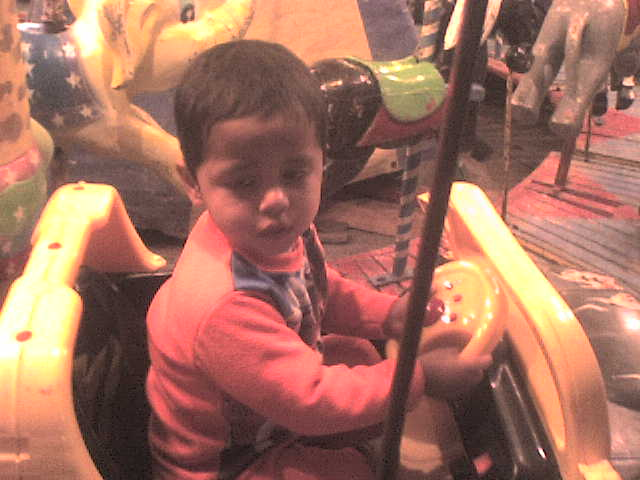

🌟 Introducción
Jose Enrique Grimaldo Velazquez nació el 30 de abril de 2008. Desde temprana edad mostró una gran pasión por el canto, expresando sus emociones a través de la música. Además de su amor por el arte, Enrique valoraba profundamente los momentos compartidos con su familia.
🎶 Sobre mí

Con 17 años de edad, Enrique es un joven apasionado por el arte y el deporte. Su vida gira en torno a la música y el voleibol. Actualmente forma parte de una rondalla y un coro, y también es un jugador destacado en torneos juveniles.
Y aunque a veces la vida puede sentirse pesada, cuando se siente débil o solo, Enrique sabe que cuenta con una amiga muy especial llamada Sohemi. Ella siempre está ahí para apoyarlo, escucharle y recordarle que no está solo. Su amistad es un refugio cálido en los días nublados.
📞 Contacto

- 📱 WhatsApp: +52 1 488 122 38 52
- 📧 Email: grimaldoenrique656@gmail.com
- 🎶 Rondalla & Coro: Disponible para eventos
- 🏐 Voleibol: Participante activo
- 📍 Ubicación: San Luis Potosí, México